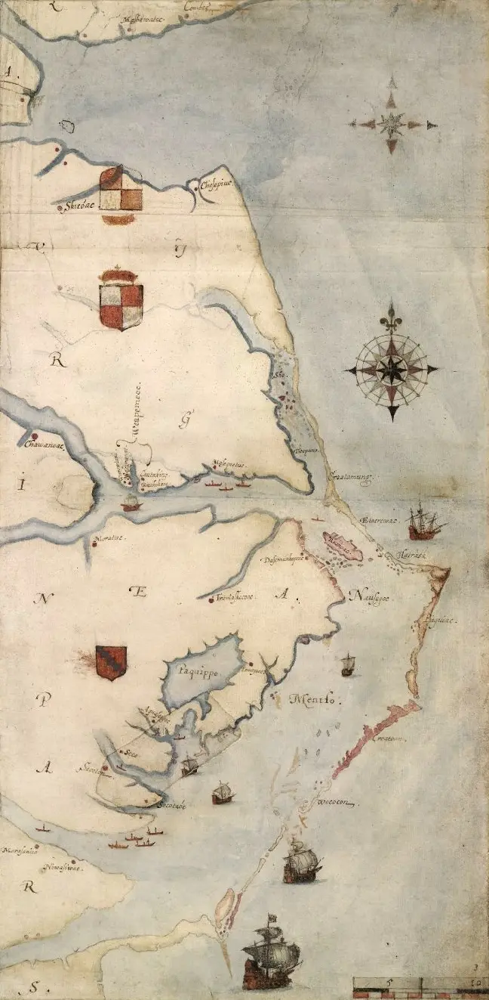
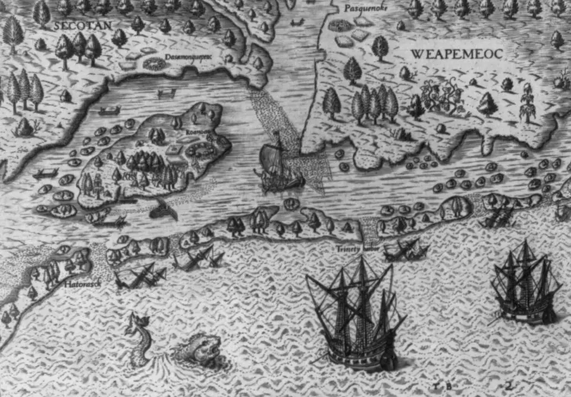
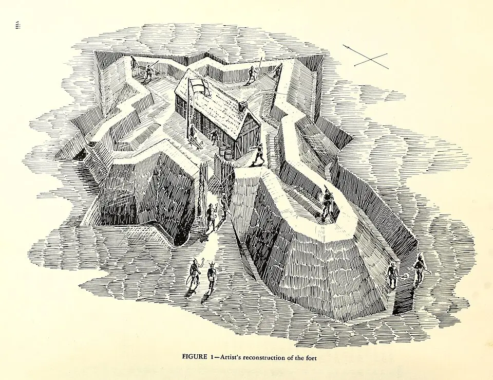
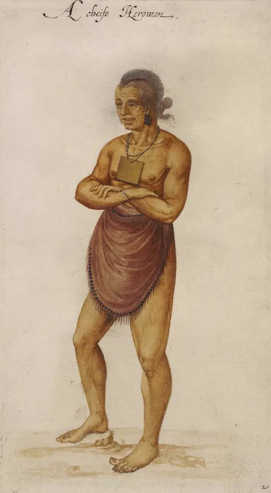

Thuộc địa biến mất, chỉ để lại một chữ khắc trên cây
Năm 1590, John White trở lại Roanoke đúng ngày sinh nhật thứ ba của cháu gái. Khu định cư đã trống, chỉ còn chữ CROATOAN khắc trên một cột hàng rào.

Đêm 17 tháng 8 năm 1590, vài chiếc xuồng thả neo ngoài khơi đảo Roanoke, nay thuộc bang North Carolina. Trên bờ có ánh lửa. Trời đã tối nên những người trên xuồng không dám lên bờ. Họ ngồi hát những bài hát Anh, mong người trên đảo nghe thấy. Trong số họ có John White, thống đốc của thuộc địa, người đã ba năm không gặp con gái và đứa cháu ngoại sinh ra ở đây. Sáng hôm sau, ông lên bờ, và câu chuyện về “Thuộc địa mất tích” bắt đầu.
Một thuộc địa đặt nhầm chỗ
Roanoke là nỗ lực thứ hai của Walter Raleigh nhằm lập khu định cư lâu dài đầu tiên của người Anh ở Bắc Mỹ. Lần đầu, năm 1585, Ralph Lane dựng một đồn quân sự ở đây, rồi bỏ đi năm 1586. Ngày 7 tháng 1 năm 1587, Raleigh cấp hiến chương lập “Thành phố Raleigh” ở vịnh Chesapeake, với White làm thống đốc.
Khoảng 115 người lên đường, trong đó có Eleanor, con gái White đang mang thai, và chồng cô là Ananias Dare. Khi đoàn ghé Roanoke để tìm những người lính còn sót lại, hoa tiêu Simon Fernandes buộc họ ở lại luôn đảo này, thay vì đi tiếp đến Chesapeake.
Ngày 18 tháng 8 năm 1587, Eleanor sinh một bé gái, đặt tên Virginia. Sổ sách ghi một sản phụ khác, Margery Harvye, cũng sinh con ít lâu sau, nhưng không ai biết gì thêm về đứa trẻ ấy. Những người định cư thuyết phục White về Anh xin tiếp tế. Ông miễn cưỡng ra đi ngày 27 tháng 8. Ông không ngờ chuyến đi ấy kéo dài ba năm.
Ba năm bị kẹt


White về đến Anh ngày 5 tháng 11 năm 1587, đúng lúc hạm đội Armada của Tây Ban Nha chuẩn bị tấn công. Nữ hoàng Elizabeth cấm mọi con tàu đủ sức ra khơi rời nước Anh.
Tháng 4 năm 1588, White được đi trên hai chiếc tàu nhỏ không đủ tiêu chuẩn chiến đấu. Nhưng thuyền trưởng lại mải săn tàu Tây Ban Nha để kiếm lời. Ngày 6 tháng 5, gần Maroc, họ bị thủy thủ Pháp tấn công, gần hai chục người chết, hàng tiếp tế bị cướp sạch. Lệnh cấm tàu kéo dài đến năm 1590. Cuối cùng White được đi nhờ một đoàn tàu cướp biển có giấy phép của John Watts.
Những gì White tìm thấy


Sáng 18 tháng 8 năm 1590, đúng sinh nhật thứ ba của Virginia Dare, White lên bờ. Có vết chân mới trên cát, nhưng không ai ra đón. Trên một thân cây có ba chữ “CRO”. Khu định cư đã được rào bằng hàng cọc. Gần lối vào, trên một cột, có khắc chữ “CROATOAN”.
Nhà cửa đã bị dỡ, mọi thứ mang được đều đã được mang đi. Vài chiếc rương bị đào lên và lục tung, ba chiếc trong đó là của White. Không còn chiếc thuyền nào ở bờ.
Năm 1587, hai bên đã hẹn: nếu dời đi, người ở lại sẽ khắc tên nơi đến; nếu gặp nguy, họ sẽ khắc thêm một hình chữ thập. Không có chữ thập nào. White tin họ đã yên ổn chuyển đến đảo Croatoan, quê của bộ tộc Croatan thân thiện. Nhưng hôm sau, dây neo tàu Hopewell đứt. Với một chiếc neo còn lại và biển động, không ai dám đi tiếp. Con tàu dạt đến quần đảo Azores rồi về Anh ngày 24 tháng 10 năm 1590. White không bao giờ quay lại.
Bằng chứng nói gì


Ngay từ năm 1605 đã có người viết rằng những người định cư hòa nhập với các bộ tộc bản địa. Người Jamestown sau này nghe kể họ bị tàn sát, và có những lời đồn về người có nét mặt châu Âu trong làng thổ dân. Không có bằng chứng nào là quyết định.
Năm 2015, Quỹ First Colony khai quật một địa điểm họ gọi là “Site X”. Tháng 10 năm 2017, họ công bố mảnh gốm thời Tudor và vũ khí, cho rằng một nhóm nhỏ người định cư đã sống yên ổn ở đó. Khó khăn là phải loại trừ khả năng các đồ vật ấy đến từ nhóm của Lane năm 1585 hoặc từ một trạm buôn những năm 1650. Phân tích ADN cũng bế tắc: chưa có bộ xương nào của Thuộc địa mất tích, và đến năm 2019 chưa xác định được hậu duệ nào.
Từ năm 1937 đến 1941 xuất hiện một loạt “đá Dare”, được cho là do Eleanor Dare khắc. Đa số nhà sử học coi chúng là đồ giả, vì hầu hết đều dẫn về một thợ đá tên Bill Eberhardt.
Cùng năm, Francis Bacon chê trách việc bỏ rơi thuộc địa là “điều tội lỗi nhất trên đời”.
Dư âm
Ở Anh, sự im lặng có hệ quả pháp lý. Năm 1597, một tòa án chấp nhận tuyên bố Ananias Dare đã chết, để con trai ông được thừa kế. Cùng năm, Francis Bacon chê trách việc bỏ rơi thuộc địa là “điều tội lỗi nhất trên đời”.
Ở Mỹ, Virginia Dare thành một biểu tượng. Năm 1937, bà xuất hiện trên đồng nửa đô la kỷ niệm, lần đầu một đứa trẻ được in trên tiền Mỹ. Tên bà được đặt cho quận Dare, cho một chai rượu vang, một hãng vani, và cả một ấn phẩm của phe dân tộc chủ nghĩa da trắng.
Hơn 100 người đã biến mất khỏi sử sách; những gì họ để lại chỉ là một chữ khắc, và nó chỉ đường cho một chuyến đi không bao giờ diễn ra.